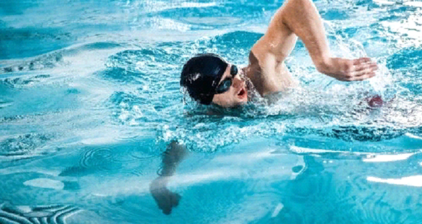
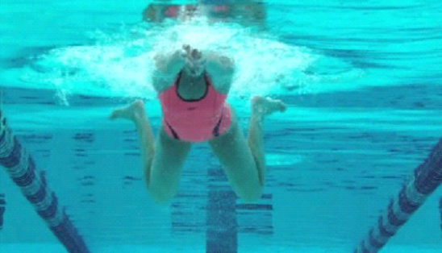

Руки по очереди делают гребки:рука зацепляет воду и делает гребок к телу, доходит до бедра, затем проносится через верх и снова вкладывается в воду.
Ноги также по очереди совершают махи.
Голов а опущена в воду. Выдох делается в воду носом и при необходимости ртом, для вдоха во время гребка тело вместе с головой поворачивается вбок, чтобы вдохнуть ртом, как показано на этом фото:

Кроль
Алгоритм движений:
Руки одновременно делают гребок – подтягиваются к себе, затем снова выбрасываются вперед.
В момент подтягивания рук (и благодаря ему) голова и плечи поднимаются над водой, чтобы сделать вдох. Затем лицо опускается в воду для выдоха.
По ходу гребка колени подтягиваются, затем в момент выброса рук ступни и голени разводятся в стороны (колени при этом не разводятся) и делается толчок ногами. В конечной точке толчка ступни сводятся вместе (смысл движений ступ – они как бы отталкиваются от воды, делают гребок).

Баттерфляй
Баттерфляй (он же – “дельфин”) по праву считается самым зрелищным стилем
Алгоритм движений:
Руки одновременно делают гребок – подтягиваются к себе, затем снова выбрасываются вперед.
В момент подтягивания рук (и благодаря ему) голова и плечи поднимаются над водой, чтобы сделать вдох. Затем лицо опускается в воду для выдоха.
По ходу гребка колени подтягиваются, затем в момент выброса рук ступни и голени разводятся в стороны (колени при этом не разводятся) и делается толчок ногами. В конечной точке толчка ступни сводятся вместе (смысл движений ступ – они как бы отталкиваются от воды, делают гребок).